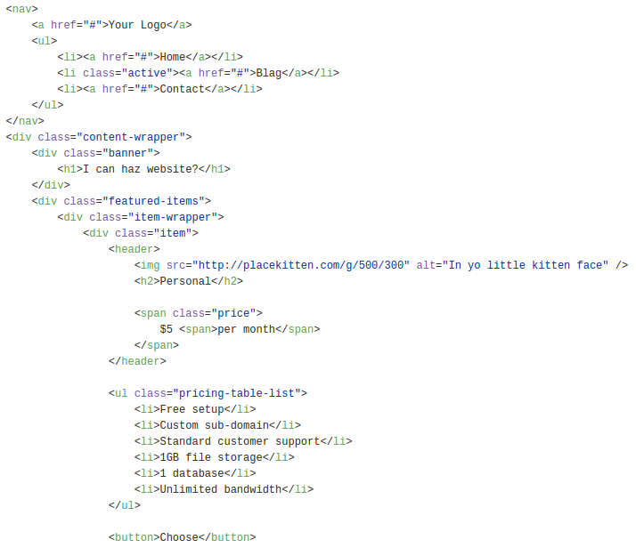

A way of organizing & applying reusable visual patterns to semantically appropriate markup and classes that describe the content, not the content's desired visual outcome
And that gets us what?
Leaner, more focused, and more reusable markup
Cleaner, more modular, and more maintainable stylesheets
Lower file-sizes
We can get our code to go from this...
...to this without having to stop using your existing tools

What do we have now?
A LOT!!!
Style-Guide Systems
Object Oriented CSS (OOCSS)
Scalable Modular Architecture for CSS (SMACSS)
Block, Element, Modular (BEM)
Atomic CSS (ACSS)
Pre-Processors
LESS
SASS/SCSS
Stylus
Post-Processors
PostCSS
Autoprefixer
Rework
Lots of new entrants every day
Frameworks
Bootstrap
Foundation
Pure
Style-Guide Systems
Really good at:
creating a visual language for reusable layout patterns
keeping layout patterns organized, and modular
...but
.container .row .column-md-12 .btn-group .btn.btn-primary {
content: "What were we talking about again?";
}
requires use of non-semantic "utility classes"
lowers markup reusability
violates the Separation of Concerns principle
leads to increasingly higher specificity overrides
Pre-Processors
Pre-Processors are AWESOME!! (until they're not)
What's good about them is what's bad about them
Brings programmability to CSS
Makes them easy to abuse/misuse
misuse can lead to, bloat, fragile chains of inheritance, and redundancy in the css output
They have an advantage of not needing a non-native CSS source language, but...
But supporting mixins, variables, and extends means 'native' css code is invalid without processor
May be unclear to the next developer
Similarly powerful, but not yet as stable or robust
CSS Processors are like a car. You can cover great distances very quickly, but in using them you increase your chances of being involved in an accident.Especially when under time pressure, or trying to navigate with poor directions.
Frameworks
Frameworks are AWESOME!!! (until they're not)
easy for getting up and running fast
but hard to maintain
utility classes pile up and lead to a specificity arms race
don't always make sense at certain breakpoints of responsive layouts
design changes lead to breakages and cruft
often force you to choose between significant refactors or ugly ugly patches
Divide style sheets into meaningful, modular layout components
Use extend to assign visually defined classes to semantically defined classes
Semantic Classing
Semantic HTML is the use of HTML markup to reinforce the semantics, or meaning, of the information in webpages rather than merely to define its presentation or look. Semantic HTML is processed by regular web browsers as well as by many other user agents. CSS is used to suggest its presentation to human users.